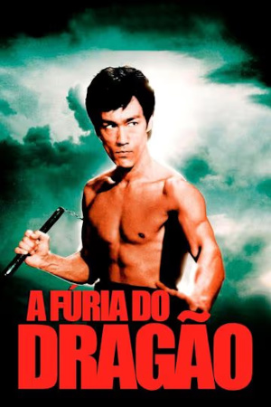
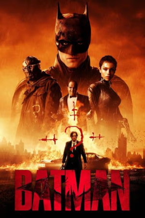
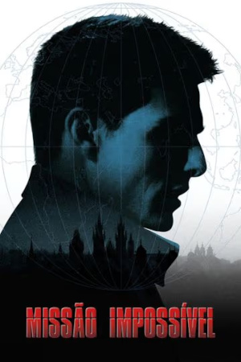
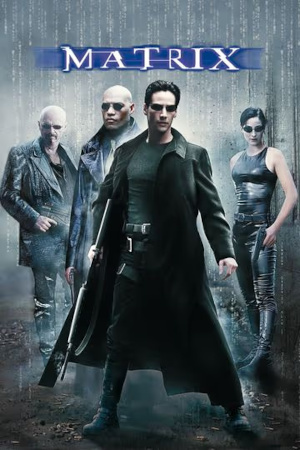

Quando Chen Zhen descobre que seu venerado mestre foi morto em circunstâncias misteriosas, decide viajar para Xangai para participar do funeral. Em seguida, ele começa a investigar as causas da morte e se depara com uma intriga envolvendo escolas de artes marciais. Exposta a conspiração, Chen precisa lutar violentamente para vingar-se dos assassinos.
John Wick é um lendário assassino de aluguel aposentado, lidando com o luto após perder o grande amor de sua vida. Quando um gângster invade sua casa, mata seu cachorro e rouba seu carro, ele é forçado a voltar à ativa e inicia sua vingança.
Depois de mais de 30 anos de serviço como um dos principais aviadores da Marinha, Pete "Maverick" Mitchell está de volta, rompendo os limites como um piloto de testes corajoso. No mundo contemporâneo das guerras tecnológicas, Maverick enfrenta drones e prova que o fator humano ainda é essencial.

Em seu segundo ano de combate ao crime, Batman descobre corrupção em Gotham City que se conecta à sua própria família enquanto enfrenta um serial killer conhecido como Charada.

Durante uma missão em Praga, um grupo especial de agentes cai em uma cilada. O americano Ethan Hunt descobre que apenas ele e outra agente sobreviveram. Tomado como informante, ele foge e começa a agir por conta própria. Com a ajuda de um novo grupo, ele vai tentar limpar seu nome, descobrindo quem foi o espião que armou para o seu time.

O jovem programador Thomas Anderson é atormentado por estranhos pesadelos em que está sempre conectado por cabos a um imenso sistema de computadores do futuro. À medida que o sonho se repete, ele começa a desconfiar da realidade. Thomas conhece os misteriosos Morpheus e Trinity e descobre que é vítima de um sistema inteligente e artificial chamado Matrix, que manipula a mente das pessoas e cria a ilusão de um mundo real enquanto usa os cérebros e corpos dos indivíduos para produzir energia.